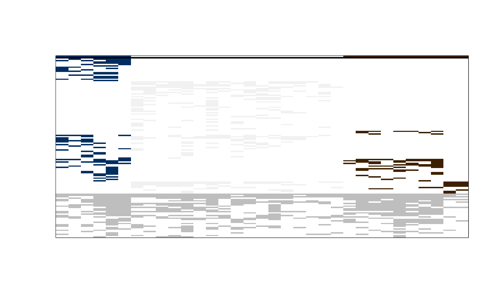
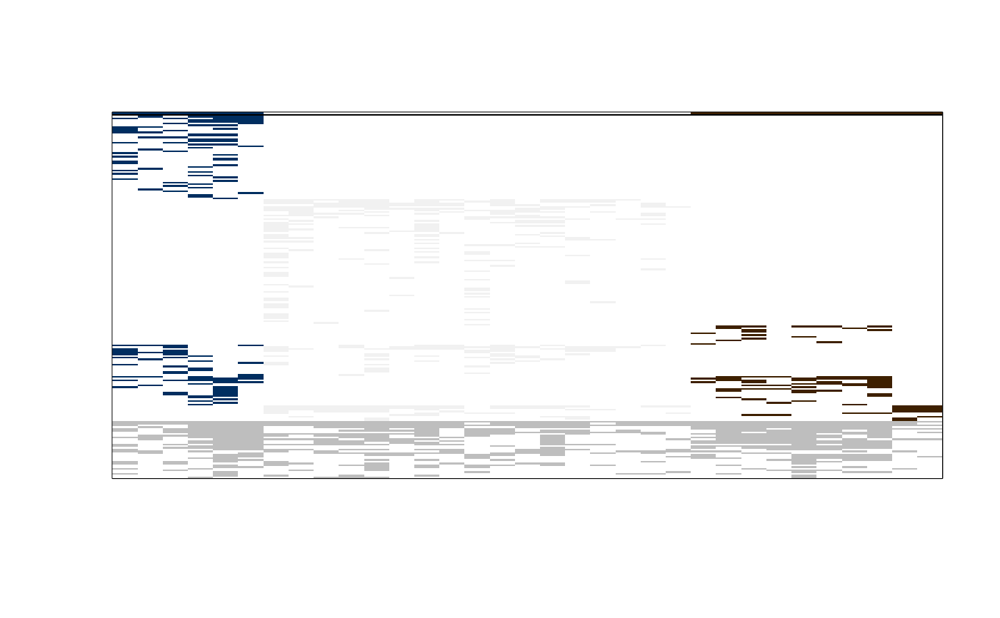

Total Differential Value optimization using Hill-climbing algorithms
Source:R/optim_tdv_hill_climb.R
optim_tdv_hill_climb.RdThis function searches for partitions of the columns of a given matrix, optimizing the Total Differential Value (TDV).
Usage
optim_tdv_hill_climb(
m_bin,
k,
p_initial = "random",
n_runs = 1,
n_sol = 1,
maxit = 10,
min_g_size = 1,
stoch_first = FALSE,
stoch_neigh_size = 1,
stoch_maxit = 100,
full_output = FALSE,
verbose = FALSE
)Arguments
- m_bin
A matrix. A phytosociological table of 0s (absences) and 1s (presences), where rows correspond to taxa and columns correspond to relevés.
- k
A numeric giving the number of desired groups.
- p_initial
A vector or a character. A vector of integer numbers with the initial partition of the relevés (i.e., a vector with values from 1 to
k, with length equal to the number of columns ofm_bin, ascribing each relevé to one of thekgroups). By default,p_initial = "random", generates a random initial partition.- n_runs
A numeric giving the number of runs to perform.
- n_sol
A numeric giving the number of best solutions to keep in the final output. Defaults to 1.
- maxit
A numeric giving the number of iterations of the Hill-climbing optimization.
- min_g_size
A numeric. The minimum number of relevés that a group can contain (must be 1 or higher).
- stoch_first
A logical.
FALSE(the default), performs only Hill-climbing on the 1-neighbours;TRUEfirst, performs a Stochastic Hill-climbing on n-neighbours (n is defined by the parameterstoch_neigh_size), and only after runs the Hill-climbing search on the 1-neighbours; see description above.- stoch_neigh_size
A numeric giving the size (n) of the n-neighbours for the Stochastic Hill-climbing; only used if
stoch_first = TRUE. Defaults to 1.- stoch_maxit
A numeric giving the number of iterations of the Stochastic Hill-climbing optimization; only used if
stoch_first = TRUE. Defaults to 100.- full_output
A logical. If
FALSE(the default) the bestn_solpartitions and respective indices are returned. IfTRUE(only available forn_sol = 1) the output will also contain information on the optimization steps (see below).- verbose
A logical. If
FALSEnothing is printed during the runs. IfTRUE, after each run, the run number is printed as well as and indication if the found partition is a 1-neighbour local maximum.
Value
If full_output = FALSE, a list with (at most) n_sol best
solutions (equivalent solutions are removed). Each best solution is also
a list with the following components:
- local_maximum
A logical indicating if
paris a 1-neighbour local maximum.- par
A vector with the partition of highest TDV obtained by the Hill-climbing algorithm(s).
- tdv
A numeric with the TDV of
par.
If full_output = TRUE, a list with just one component (one run only),
containing also a list with the following components:
- res.stoch
A matrix with the iteration number (of the Stochastic Hill-climbing phase), the maximum TDV found until that iteration, and the TDV of the randomly selected n-neighbour in that iteration.
- par.stoch
A vector with the best partition found in the Stochastic Hill-climbing phase.
- tdv.stoch
A numeric showing the maximum TDV found in the Stochastic Hill-climbing phase (if selected).
- res
A matrix with the iteration number (of the Hill-climbing), the maximum TDV found until that iteration, and the highest TDV among all 1-neighbours.
- local_maximum
A logical indicating if
paris a 1-neighbour local maximum.- par
A vector with the partition of highest TDV obtained by the Hill-climbing algorithm(s).
- tdv
A numeric with the TDV of
par.
Details
Given a phytosociological table (m_bin, rows corresponding to
taxa and columns corresponding to relevés) this function searches for
a k-partition (k defined by the user) optimizing TDV, i.e., searches,
using a Hill-climbing algorithm, for patterns of differential taxa by
rearranging the relevés into k groups.
The optimization can start from a random partition (p_ini = "random"), or
from a given partition (p_ini, defined by the user or produced by any
clustering method, or even a manual classification of the relevés).
In the description given below, a 1-neighbour of a given partition is
another partition that can be obtained by simply changing one relevé to a
different group. Equivalently a n-neighbour of a given partition is
another partition obtained ascribing n relevés to different groups.
This function implements a Hill-climbing algorithm, where a TDV improvement
is searched in each iteration, screening all 1-neighbours, until the given
number of maximum iterations (maxit) is reached. If maxit is not
reached but no TDV improvement is possible among all the 1-neighbours of
the currently best partition, the search is halted and the current
partition is tagged as a local maximum and outputted.
As the screening of all 1-neighbours might be computationally heavy,
specially while analyzing big tables, optionally, a Stochastic
Hill-climbing search can be performed as a first step
(stoch_first = TRUE). This consists in searching for TDV improvements, by
randomly selecting, in each iteration, one n-neighbour (n defined by
the user in the parameter stoch_neigh_size), and accepting that
n-neighbour partition immediately if it improves TDV. This is repeated
until a given number of iterations (stoch_maxit) is reached. Specially
while starting from random partitions, Stochastic Hill-climbing is intended
to increase TDV without the computational burden of the full neighbourhood
screening, which can be done afterwards, in a second step.
The Hill-climbing or the combination of Stochastic Hill-climbing +
Hill-climbing, can be run multiple times by the function (defined in
n_runs), which consists in a Random-restart Hill-climbing, where n_sol
best solutions are kept and returned.
As the Hill-climbing algorithm converges easily to local maxima, several runs of the function (i.e., multiple random starts) are advised.
Trimming your table by a 'constancy' range or using the result of other
cluster methodologies as input, might help finding interesting partitions.
However, after trimming the table by a narrow 'constancy' range, getting a
random initial partition with TDV greater than zero might be hard; on such
cases using a initial partition from partition_tdv_grasp() or
partition_tdv_grdtp(), or even the result of other clustering
strategies, as an input partition might be useful.
Author
Tiago Monteiro-Henriques. E-mail: tmh.dev@icloud.com.
Examples
# Getting the Taxus baccata forests data set
data(taxus_bin)
# Removing taxa occurring in only one relevé in order to
# reproduce the example in the original article of the data set
taxus_bin_wmt <- taxus_bin[rowSums(taxus_bin) > 1, ]
# Obtaining a partition that maximizes TDV using the Stochastic Hill-climbing
# and the Hill-climbing algorithms
result <- optim_tdv_hill_climb(
m_bin = taxus_bin_wmt,
k = 3,
n_runs = 7,
n_sol = 2,
min_g_size = 3,
stoch_first = TRUE,
stoch_maxit = 500,
verbose = TRUE
)
#> Run number: 1 Confirmed local maximum: TRUE
#> Run number: 2 Confirmed local maximum: TRUE
#> Run number: 3 Confirmed local maximum: TRUE
#> Run number: 4 Confirmed local maximum: TRUE
#> Run number: 5 Confirmed local maximum: TRUE
#> Run number: 6 Confirmed local maximum: TRUE
#> Run number: 7 Confirmed local maximum: TRUE
# Inspect the result. The highest TDV found in the runs.
result[[1]]$tdv
#> [1] 0.1706285
# If result[[1]]$tdv is 0.1958471 you are probably reproducing the three
# groups (Estrela, Gerês and Galicia) from the original article. If not
# try again the optim_tdv_hill_climb function (maybe increasing n_runs).
# Plot the sorted (or tabulated) phytosociological table
tabul1 <- tabulation(
m_bin = taxus_bin_wmt,
p = result[[1]]$par,
taxa_names = rownames(taxus_bin_wmt),
plot_im = "normal"
)

# Plot the sorted (or tabulated) phytosociological table, also including
# taxa occurring just once in the matrix
tabul2 <- tabulation(
m_bin = taxus_bin,
p = result[[1]]$par,
taxa_names = rownames(taxus_bin),
plot_im = "normal"
)
